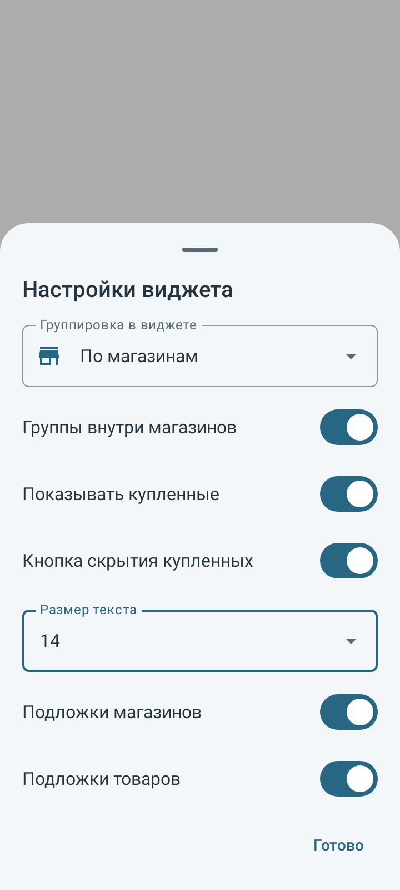
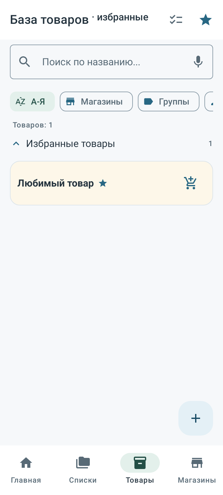
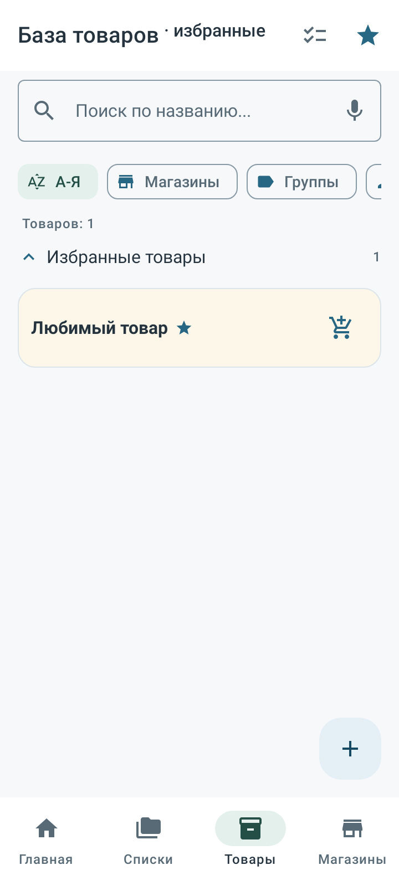
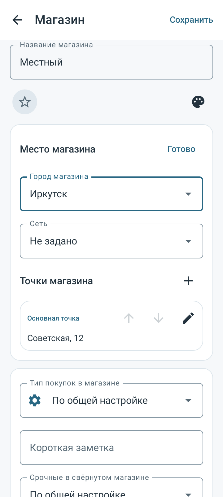
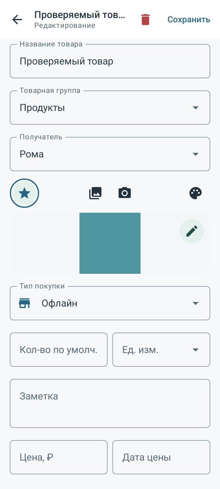
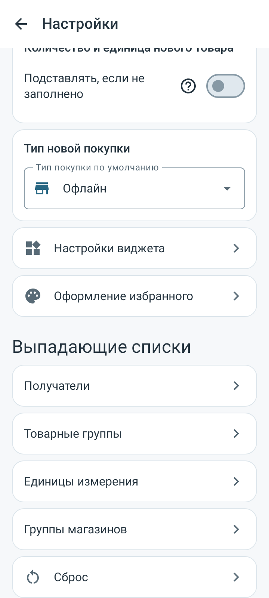
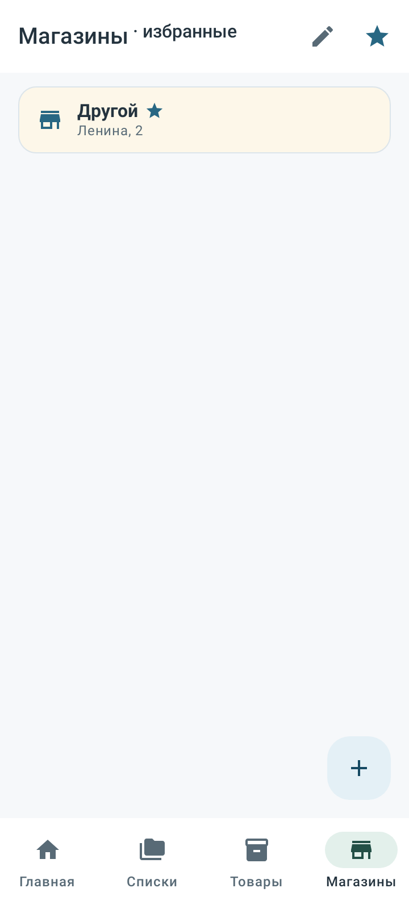
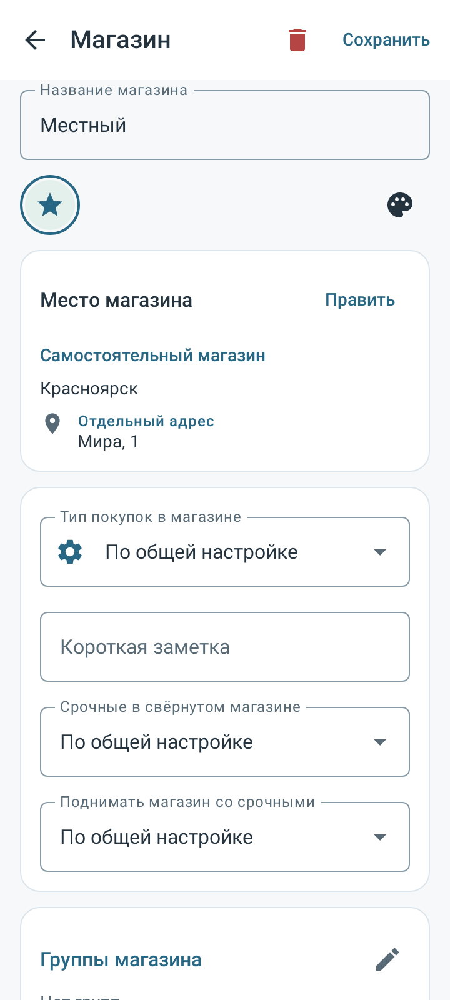
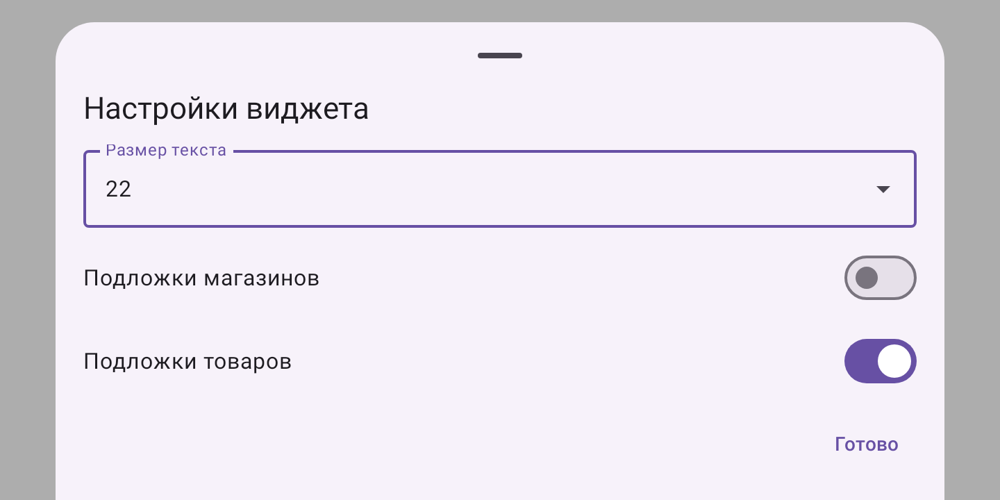

494 проверки /34 класса,58 новых. Адресный набор и повтор одного класса, не полный набор.28 синтетических снимков API28/35; физический телефон не проверен.
Манифест · JUnit · Исходники · Методика
# Проверка0.28.0 Настройки, карточки и городские адреса. Room25, полная копияZIP23. Адресный набор и повтор одного класса: **494/494 уникальных сценария в34 полных классах**, включая58 новых, итог failures/errors/skipped=0. Начальный набор494 содержал два сбоя старого UI-теста прокрутки к сбросу; все12 сценариев его класса повторены после уточнения прокрутки до самого элемента управления и ожидания операции. Проверки данных и имена сценариев сохранены. Это не единый успешный прогон и не полный набор всех тестов приложения. Проверены связанные настройки, карточки, города, миграции, копии, списки и виджет наAPI28/35 с Robolectric native graphics. Release APK и lint успешны: 0 ошибок, 83 предупреждений, 4 подсказок. 28 синтетических PNG просмотрены; физический телефон/Gboard/OEM-виджет и внешняя галерея не проверялись. Между набором и повтором изменён только Refine170UiTest; код приложения/схема/build неизменны. Все 336 файлов приложения/тестов/схем/сборки неизменны после начала повтора;40 прежних APK/личных материалов неизменны. APK0.28.0(38), пакет `com.spisokryadom.app.next`, прежний сертификат. SHA256 `5620d37320597ea7d74fb7f60ae892e2919104f82e8bfec34403cb16548dccd4`. Установка поверх текущего .next приложения; импорт базы не нужен. ## Изменения - Настройки виджета в одной нижней панели; размер12–22 через список. Четыре справочника открываются по запросу; сброс в самом низу. - Звёздочка вместо checkbox в карточках; у товара в той же строке галерея/камера/палитра, фото ниже. Формат покупки до количества, доступен смешанный вариант. - Для единственной точки скрыты выбор доступности и приоритеты. - Город покупок только в настройках. Карточка магазина хранит отдельные адреса городов, отмена не сохраняет, Save атомарный. Общий черновик отделов/имени сети не откатывается при переходах между городами. - Новые городские адреса явно наследуют каталог данного магазина; совпадение старых имён не объединяет записи. Городской автоподбор не использует чужие магазины; товары сохраняются. - Массовые настройки магазинов через карандаш: отделы, избранность, формат покупки, два параметра срочности. Активное избранное обозначено в заголовках товаров/магазинов. ## Ограничения и методика Низкоуровневое восстановление города не меняет снимок покупок; пользовательская смена города переназначает только регулярные некупленные автоматические строки. Купленные, отдельные списки, явное «Без магазина» и свободные места сохраняются. Физический перенос ТЦ в город с уже существующим профилем того же магазина отклоняется до записи; автоматического объединения профилей нет. Предварительные попытки с исправлениями UI-стенда не включены в494. Старые миграции и схемы сохранены, пакет и подпись прежние. Публичный JUnit содержит только разрешённые имена/время/статусы; личные базы, фото и ключи не публикуются. [Манифест](verification.json) · [JUnit](junit.xml) · [Хеши исходников](source-seal.json) · [Визуальный отчёт](report.html).








